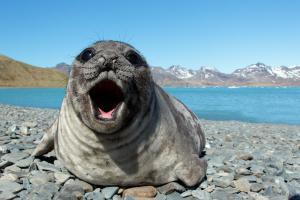

Je největší ploutvonožec a zástupce řádu šelmy na světě.[2] Patří do čeledi tuleňovitých, tedy do čeledi druhů nejlépe přizpůsobených (v rámci ploutvonožců) k životu ve vodě. Rypouši sloní žijí převážně v oblastech blízkých Antarktidě.
Samci rypouše sloního dosahují délky přibližně 4 až 6,5 m a hmotnosti 2 až 4,5 tuny. Samice jsou mnohem menší, dlouhé obvykle 2,5 až 3 m a váží většinou mezi 400 a 900 kg. Samec tedy může být i více než desetkrát těžší než samice, přičemž obvykle je pětkrát až šestkrát těžší než samice. Rypouši většinu času tráví v moři a koncem zimy vycházejí na souš, kde se páří. Přitom téměř nepřijímají potravu a žijí z úctyhodných zásob podkožního tuku. Krk mají tlustý a posetý hrbolky.

Zpět do menu